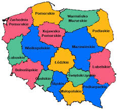

<map name="mapa">
  <area shape="poly" coords="120,92,130,64,170,53,197,102,178,105,176,139,153,136,147,128,150,118,150,110,135,96" href="http://mazovia.pl" />
  <area shape="circle" coords="121,121,23" href="http://lodzkie.pl" />
  <area shape="rect" coords="130,130,160,160" href="http://swietokrzyskie.pl" alt="Świętokrzyskie">  
</map>
